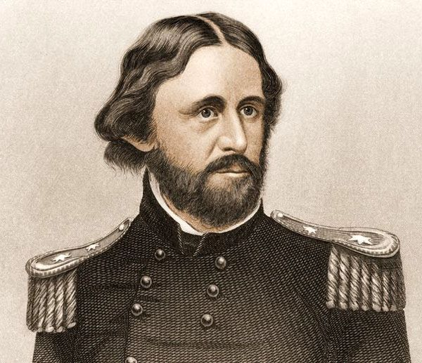

Modern whitewater rafting as we know it dates back to 1842 when Lieutenant John Fremont began
exploring Colorado’s Platte River. During this time, he and inventor Horace H. Day created a rubber raft
featuring four rubber cloth tubes and a wrap-around floor to help survey the Great Plains and Rocky Mountains areas.
Early river rafting continued in 1869 when Major John Wesley Powell led ten men in four wooden boats on a scientific
rafting exploration of the Green and Colorado Rivers.

Although their boats weren’t built for Colorado whitewater rafting, there were many times when the men had
no choice but to hold on tight and ride the rapids. In 1940, the first commercial whitewater rafting trip
went down the Salmon River in the northwestern U.S. At the end of World War II, surplus rafts became available
and trips began to run down western rivers on aregular basis.